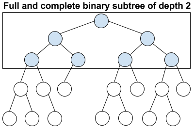

Introduction
My friend and colleague, Dominik MessingerL1 was fortunate to learn about abstract data structures in high school1. After chatting to him one day, the topic of red-black trees came up. He studied AVL treesL2 in depth at high school, but did not do the same for red-black trees. After this chat, I realized I had not formalized this topic in my mind either. So I decided to choose one topic and write about...
So here is an analysis of the maximum height of a red-black trees.
Background Knowledge
Tree Level
A node's level is the number of parent node ancestors the node has. Level is zero based (the root is at level 0 since it has no ancestors).

An important observation is that a node at level \(k\) has \(k+1\) parent ancestors.
Full And Complete Binary Tree
A tree that is both full and complete2 has the following properties:
- All non-leaf nodes have two children.
- All leaf nodes are at the same level.

A full and complete binary tree with \(n\) nodes and \(k\) levels has the following relationship:
Red-Black Tree
Red-Black Tree Invariants
A red-black tree is a binary search treeL3 that is constrained by the following 4 invariants:
- Each node is either red or black.
- The root node is black.
- Every red node must either have zero or two black chilren.
- Every root-null path must have the same number of black nodes.
The Maximum Height Of A Red-Black Tree
The maximum height of a red-black tree is the root-null path that contains the most number of nodes. Ironically, an examiniation of the shortest root-null path is needed to calculate the maximum height.
Length Of The Shortest Root-Null Path
By invariant 4, the maximum number of black nodes in any root-null path is restricted by the number of nodes in the shortest root-null path. Assume the shortest root-null path is at level \(k\):
- There are \(k+1\) nodes in the root-null path at level \(k\).
- There is a full and complete binary subtree with \(k\) levels.
For example, if the shortest root-null path is at level 2, the full and complete binary subtree would look like the image below:

Suppose the full and complete binary subtree has \(n\) nodes, then using the fact that \(n=2^{k+1}-1\), the number of nodes in the root-null path (i.e. \(k+1\)) is logarithmic in \(n\):
Due to invariant 4, the maximum number of black nodes in any root-null path is \(\log_2(n+1)\)
Length Of The Longest Root-Null Path
The longest root-null path will have \(\log_2(n+1)\) black nodes (the maximum that it can have due to invariant 4). The question now becomes: How many red nodes can be present? By invariant 3, a red node must have black node children. This restricts the maximum number of red nodes to being placed between the black nodes:
The maximum number of red nodes in a root-null path is therefore constrained by the maximum number of black nodes, which is \(\log_2(n+1)\). So the length of the longest root-null path is:
This proves that the height of a red-black tree is \(O\left(\log n\right)\) where \(n\) is the total number of nodes. It is also worth noting that the constant factor in the big-O notation is \(2\), which is very low.
Searching Is Logarithmic
In a binary search tree, the time complexity of a search operation is governed by the maximum height of the tree. This means that search in a red-black tree is logarithmic time complexity.
Conclusion
A red-black tree is probably the most used balanced binary search tree algorithm. It is a little bit more work to show that update, delete and insert is also logarithmic, but any proof would rely upon the fact the maximum height is logarithmic.
Links
- http://dome.hobbits.grus.uberspace.de/
- http://en.wikipedia.org/wiki/AVL_tree
- http://en.wikipedia.org/wiki/Binary_search_tree
- He is German, so I think this is a nod to the excellent school system in Germany. ↩
- Full and complete binary trees are sometimes called perfect binary trees. ↩